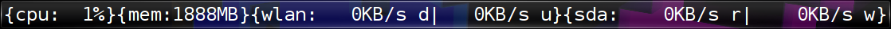
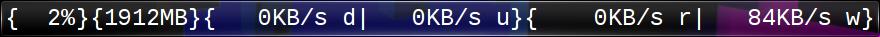
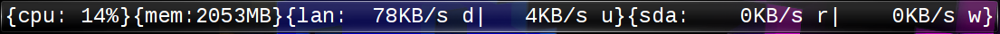

Hacking TextMon
Table of Contents
1 Introcdution
A number of examples on how to alter TextMon are presented. I'll assume you know what is explained in the prelude.
2 Changing the font
The CSS stylesheet that defines the font appearance is located in line 10 to 13. If
// Font properties var styleSheet = { "font-family": "Liberation Mono", "font-style": "normal", "font-size": "10px", "color": "white" };
is changed to use the default monospace font and a bigger font size
// Font properties var styleSheet = { "font-family": "Monospace", "font-style": "normal", "font-size": "24px", "color": "white" };
we get

Bigger font
The CSS properties at your disposal are listed here
Note I haven't played much with these beyond setting the font-family and
font-size. I've tried adding a border
var styleSheet = { "font-family": "Liberation Mono", "font-style": "normal", "font-size": "10px", "color": "white", "border-style": "solid", "border-width": "5px", "border-color": "white" };
This made the applet bigger, so the border was added and set to 5px. The
border color however wasn't white, but looked the same as the rest of the
applet background. I actually like that, because it ensures my plasma desktop
looks consistent, but I'd really like to know which properties I can use with
plasma and which not (TODO).
3 Changing value decoration
The code that arranges the labels is at the lines 141-146
layout.addItem(sep("{cpu:")); layout.addItem(cpu.label); layout.addItem(sep("}")); layout.addItem(sep("{mem:")); layout.addItem(mem.label); layout.addItem(sep("}")); layout.addItem(sep("{wlan:")); layout.addItem(wlan.label); layout.addItem(sep("}")); layout.addItem(sep("{sda:")); layout.addItem(sda.label); layout.addItem(sep("}"));
If we change remove the device name
layout.addItem(sep("{")); layout.addItem(cpu.label); layout.addItem(sep("}")); layout.addItem(sep("{")); layout.addItem(mem.label); layout.addItem(sep("}")); layout.addItem(sep("{")); layout.addItem(wlan.label); layout.addItem(sep("}")); layout.addItem(sep("{")); layout.addItem(sda.label); layout.addItem(sep("}"));
we'll get

Without device names
Or you do something entirely different
layout.addItem(cpu.label); layout.addItem(sep("|")); layout.addItem(mem.label); layout.addItem(sep("|")); layout.addItem(wlan.label); layout.addItem(sep("|")); layout.addItem(sda.label);
Random decoration
4 Removing cpu entry
This doesn't make much sense, but I want you to know how to do it anyways.
The steps to remove either cpu or mem are analogous. We will show how it's done for cpu here.
Comment out or remove
// /** cpu */ // var cpu = (function () { // var that = {}; // that.source = "cpu/system/TotalLoad"; // that.sources = [that.source]; // that.label = newLabel(); // that.label.text = "---%"; // that.dataUpdated = function (name, data) { // if (!data.value) { return; } // if (name !== this.source) { // throw ("[CODE ERROR] this routine is meant to handle '" // + this.source + "', not '" + name + "'"); // } // var paddedValue = helpers.padStrLeft(parseInt(data.value, 10).toString(), ' ', 3); // this.label.text = paddedValue + data.units; // }; // return that; // }());
Comment out or remove
// checkedConnectSource(engine, cpu.source, cpu);
Comment out or remove
var sourceLabelMap = (function () { // layout.addItem(sep("{cpu:")); layout.addItem(cpu.label); layout.addItem(sep("}"));
The sad result

Without cpu :(
5 Removing wlan entry
The steps to remove either sda or wlan are analogous. We will show how it's done for wlan here.
Comment out or remove
// /** wlan */ // var wlan = (function () { // var that = {}; // that.sourceDown = "network/interfaces/wlan0/receiver/data"; // that.sourceUp = "network/interfaces/wlan0/transmitter/data"; // that.sources = [that.sourceDown, that.sourceUp]; // that.cache = { // down: {value: "----", units: "KB/s"}, // up: {value: "----", units: "KB/s"} // }; // that.label = newLabel(); // that.label.text = "----KB/s d up:----KB/s u"; // that.dataUpdated = function (name, data) { // if (!data.value) { return; } // if (name === this.sourceDown) { // this.cache.down = data; // this.cache.down.value = parseInt(data.value, 10).toString(); // } else if (name === this.sourceUp) { // this.cache.up = data; // this.cache.up.value = parseInt(data.value, 10).toString(); // } // var down = this.cache.down; // var paddedValue = helpers.padStrLeft(down.value, ' ', 4); // var text = paddedValue + down.units + " d"; // // // text += " "; // // // var up = this.cache.up; // var paddedValue = helpers.padStrLeft(up.value, ' ', 4); // text += paddedValue + up.units + " u"; // this.label.text = text; // }; // return that; // }());
Remove "wlan" from line 35
var labelNames = ["cpu", "mem", "sda"];
Comment out or remove
// /** wlan */ // var wlan = (function () { // var that = {}; // that.sourceDown = "network/interfaces/wlan0/receiver/data"; // that.sourceUp = "network/interfaces/wlan0/transmitter/data"; // that.sources = [that.sourceDown, that.sourceUp]; // that.cache = { // down: {value: "----", units: "KB/s"}, // up: {value: "----", units: "KB/s"} // }; // that.label = newLabel(); // that.label.text = "----KB/s d up:----KB/s u"; // that.dataUpdated = function (name, data) { // if (!data.value) { return; } // if (name === this.sourceDown) { // this.cache.down = data; // this.cache.down.value = parseInt(data.value, 10).toString(); // } else if (name === this.sourceUp) { // this.cache.up = data; // this.cache.up.value = parseInt(data.value, 10).toString(); // } // var down = this.cache.down; // var paddedValue = helpers.padStrLeft(down.value, ' ', 4); // var text = paddedValue + down.units + " d"; // // // text += " "; // // // var up = this.cache.up; // var paddedValue = helpers.padStrLeft(up.value, ' ', 4); // text += paddedValue + up.units + " u"; // this.label.text = text; // }; // return that; // }());
Comment out or remove
// for(var k in wlan.sources) { // checkedConnectSource(engine, wlan.sources[k], wlan); // }
Comment out or remove
// layout.addItem(wlan.label); layout.addItem(sep("|"));
The result

Without wlan
6 Monitoring eth0 instead of wlan0
Your system may have a different device names for wlan (i.e. ath0) or you
want to minitor your LAN (eth0) throughput instead.
Though it isn't strictly necessary, I recommend reading on plasma data engines before you continue. Because
- it's interesting
- you'll know what to do when something goes wrong here
Use plasmaengineexplorer to figure out the proper source names. For the down
rate of the eth0 device this is

eth0
The down rate it is
network/interfaces/eth0/receiver/data
and for the up rate
network/interfaces/eth0/transmitter/data
Now compare this with the following code
/** wlan */ var wlan = (function () { var that = {}; that.sourceDown = "network/interfaces/wlan0/receiver/data"; that.sourceUp = "network/interfaces/wlan0/transmitter/data";
That is right, you can just search and replace "wlan" with "eth"
var sourceNames = (function () { ... ret["lanDown"] = "network/interfaces/eth0/receiver/data"; ret["lan0Up"] = "network/interfaces/eth0/transmitter/data"; // var sdaBase = "disk/sda_(8:0)/Rate"; ...
you simply replace ~wlan" with "lan" in
sourceLabelMapdataCacheformattersupdateLabels

lan instead of wlan
/** eth */ var eth = (function () { var that = {}; that.sourceDown = "network/interfaces/eth0/receiver/data"; that.sourceUp = "network/interfaces/eth0/transmitter/data"; that.sources = [that.sourceDown, that.sourceUp];
Change
for(var k in wlan.sources) { checkedConnectSource(engine, wlan.sources[k], wlan); }
to
for(var k in eth.sources) { checkedConnectSource(engine, eth.sources[k], eth); }
Change
layout.addItem(sep("{wlan:")); layout.addItem(wlan.label); layout.addItem(sep("}"));
to
layout.addItem(sep("{lan:")); layout.addItem(eth.label); layout.addItem(sep("}"));
lan instead of wlan